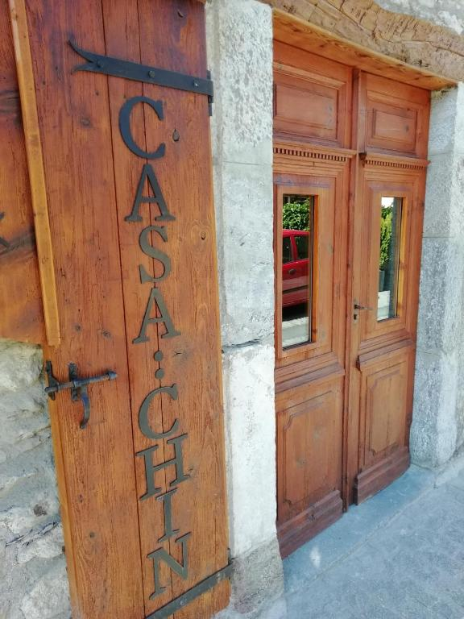

Casa Chin
Localizacion
Carrèr Major, 32a, 25539 Betrén, Lleida
Istòria
Más que una casa. Un proyecto que ofrece a los visitantes diferentes opciones de servicio. Para quien viene al Valle de Aran a hacer deporte, para quien quiere disfrutar de la naturaleza, la gastronomía, para quien está interesado en el arte y la cultura, para descansar o para realizar o seguir alguna de las propuestas terapéuticas que se ofrecen. Un alojamiento para un máximo de 23 personas.